Prendre l'avion avec son chien ne devrait pas être aussi compliqué
Découvrez le
MyDogCanFly Decision Engine™
Dossier de presse
2026
Dossier de presse 2026
Sommaire
03Un voyage. Des dizaines de règlesLe problème
09Un marché en mouvementContexte
04Si votre chien peut volerLa plateforme
10L'histoire du fondateurLes coulisses
05 & 06De la complexité à la clartéDecision Engine™
11Notre bêta-testeur a 4 pattesNotre mascotte
07Bâti sur la confianceNotre méthode
12À quoi ça ressembleLe produit
08Chiffres clésEn chiffres
13Restons en contactContact
MyDogCanFly est une plateforme d'information gratuite qui indique aux propriétaires de chiens, en quelques minutes, si leur chien peut voyager en avion — avec quelle compagnie, selon quelles règles, et ce qu'il faut préparer.
mydogcanfly.com02
Le problème
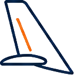
01
Politiques des compagnies
02
Exigences des pays
03
Certificats sanitaires
04
Limites de température
05
Dimensions de la caisse
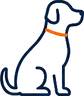
06
Restrictions de race
07
Documents vétérinaires
08
Le voyage de retour
Un voyage. Des dizaines de règles
Chaque décision influence la suivante
mydogcanfly.com03
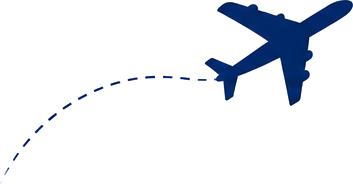
La plateforme
MyDogCanFly lance la première plateforme gratuite qui vous dit si votre chien peut voler
Une seule recherche. Des réponses claires. De meilleurs voyages pour vous et votre chien
MyDogCanFly vous aide à trouver simplement la meilleure compagnie et le meilleur itinéraire pour votre chien — vite, sûrement et sans stress.
Comment ça marche, en trois étapes
1Rechercher
Indiquez votre destination et quelques informations sur votre chien.
2Comparer
Nous analysons les politiques, itinéraires et exigences en quelques secondes.
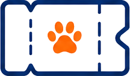
3Choisir
Recevez des recommandations claires pour réserver en toute confiance.
mydogcanfly.com04
Le fonctionnement
De la complexité. À la clarté
La bonne décision en quelques minutes
Profil du chien
Race
Poids et taille
Âge et besoins de santé
→
Détails du voyage
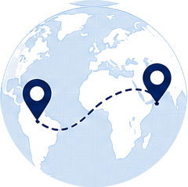
Départ et arrivée
Dates de voyage
Cabine / soute / fret
Direct ou avec escales
→
Règles vérifiées
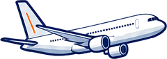
Politiques animaux des compagnies
Exigences des pays
Normes IATA
Embargos saisonniers
→
→
Vos recommandations sur mesure
Les meilleures compagnies pour votre chien
Itinéraires conformes
Choix de la caisse
Checklist étape par étape
En confiance
Informations vérifiées
Issues de la documentation officielle des compagnies et des États.
Croisement intelligent
Le profil de votre chien est croisé avec toutes les règles applicables.
Temps gagné
Des semaines de recherche condensées en une seule requête.
Des voyages plus sûrs
Moins de surprises à l'enregistrement, donc moins de stress pour votre chien.
mydogcanfly.com05
Cas concret
MyDogCanFly Decision Engine™
Verdict : Réalisable
sous conditions
Par exemple :
Paris → Mexico → Paris
Identité : Golden Retriever, 35 kg
Le vol
Soute
Au-delà de 8 kg, la cabine est exclue. Air France accepte la soute de 8 à 75 kg caisse comprise, à déclarer au moins 24 h avant le départ.
400 €
par trajet, sur cette route
Les invariants, dans les deux sens
Puce ISO implantée avant ou avec le vaccin · vaccin rage valide (1ʳᵉ dose à partir de 12 semaines, puis 21 jours d'attente) · rappels sans rupture · chien apte au voyage le jour J.
1
Au départ de France
Aucune formalité de sortie : le chien quitte l'UE librement. Tout se joue à l'arrivée — et surtout au retour.
2
À l'arrivée au Mexique
Certificat de Bonne Santé établi dans les 15 jours, original et copie, à en-tête d'un vétérinaire agréé. Inspection OISA du SENASICA. Caisse propre et vide. Ni puce imposée, ni titrage, ni quarantaine.
3
Avant le retour, sortir du Mexique
Certificat zoosanitaire d'exportation SENASICA à demander environ 3 jours ouvrés à l'avance, puis endossement à l'aéroport le jour du vol. À organiser sur place, en espagnol.
4
Au retour en France
Puce, rage valide et certificat sanitaire UE endossé par un vétérinaire officiel avant le départ. Pas de titrage. Point de passage voyageurs, documents originaux.
📦Calculateur de caisse IATA
500 / XL
Intérieur minimum 85 × 41 × 67 cm, calculé sur les mesures réelles du chien (71 cm de long, 67 cm au garrot). Série indicative ≈ 94 × 64 × 68 cm — toujours vérifier l'intérieur réel de la caisse.
🌡️Risque chaleur en soute
Seuil ≈ 30 °C
Au-delà, beaucoup de compagnies suspendent la soute — l'embargo suit la température, pas la saison. Ce qui compte est le tarmac au départ et à l'arrivée, pas la météo en ville.
Le Mexique n'exige pas la vaccination antirabique à l'entrée. Le retour en France, si.
La contrainte qui complique le voyage n'est pas au départ : mais au retour.
Données vérifiées le 11 juillet 2026 · sources officielles SENASICA et Air France
06
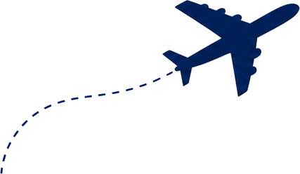
Notre méthode
Bâti sur la confiance
Chaque règle, politique et exigence publiée sur MyDogCanFly est sourcée, vérifiée et tenue à jour
01
Sources officielles
Les informations proviennent directement des sites des compagnies et de leur documentation publiée.
02
Révision continue
Les politiques changent. Nous révisons et mettons à jour nos données en continu.
03
Réglementations nationales
Nous intégrons les conditions d'entrée et la réglementation animale de chaque destination.
04
Références IATA
Nos données caisses et manipulation suivent la réglementation IATA sur les animaux vivants.
05
Méthode transparente
Sources claires, dates visibles et un engagement affirmé de précision.
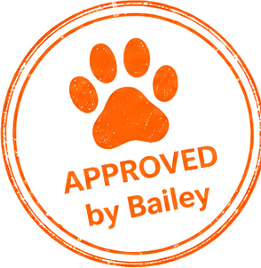
MyDogCanFly est une plateforme d'information indépendante. Nous ne sommes ni une compagnie aérienne, ni une agence de voyage, ni un transporteur d'animaux — et nous ne recommandons jamais un itinéraire sur lequel nous ne mettrions pas notre propre chien.
mydogcanfly.com07
En chiffres
Les chiffres clés de MyDogCanFly
La plateforme la plus complète pour voyager en avion avec son chien
90+
Compagnies comparées
Les politiques animaux de plus de 90 compagnies dans le monde.
160+
Destinations
Itinéraires acceptant les chiens et conditions d'entrée partout dans le monde.
169
Races de chiens
Informations détaillées par race, taille et morphologie brachycéphale.
4
Langues
Anglais, français, espagnol et portugais.
100%
Informations sourcées
Chaque règle renvoie à une documentation officielle.
Disponible 24/7
Accédez à la plateforme à tout moment, partout.
Decision Engine™
Notre moteur propriétaire trouve les meilleures options pour votre chien.
Plateforme cloud
Rapide, sécurisée et toujours à jour.
Par des passionnés
Créée par des propriétaires de chiens, pour eux.
Gratuite
Parce que chaque chien mérite de voyager.
Chiffres arrêtés en juillet 202608
Contexte de marché
Un marché en mouvement
Les chiens voyagent plus que jamais — et les règles n'ont jamais été aussi difficiles à suivre
2,4 Md$
Marché mondial des services de voyage pour animaux en 2024, attendu à 4,0 Md$ en 2030. (1)
9.5%
Croissance annuelle attendue du voyage international avec animaux — le segment le plus dynamique. (1)
~2 M
Animaux qui prendraient l'avion chaque année sur les compagnies commerciales américaines, en cabine et en soute. (2)
68%
Part du marché des services de voyage pour animaux représentée par les chiens en 2024. (3)
Une demande structurelle
Le chien fait partie de la famille. Télétravail, expatriations et séjours plus longs font qu'il voyage de plus en plus avec ses maîtres au lieu de rester à la maison.
Une information éclatée
Les règles sont dispersées entre sites de compagnies, portails officiels et forums — souvent obsolètes, rarement comparables, jamais réunies.
Notre place
Les acteurs existants transportent les animaux, contre paiement. MyDogCanFly répond gratuitement à la question qui vient avant : mon chien peut-il voler, et comment ?
Sources — (1) Grand View Research, Pet Travel Services Market Report 2025-2030. (2) Estimations sectorielles relayées par la presse voyage américaine, 2025. (3) Market.us, Pet Travel Services Market, 2025.
mydogcanfly.com09
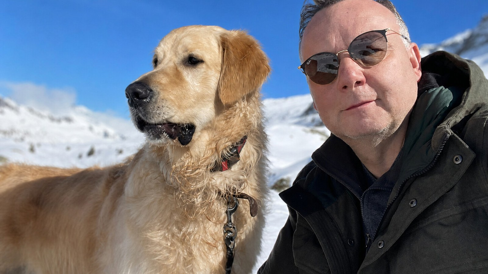
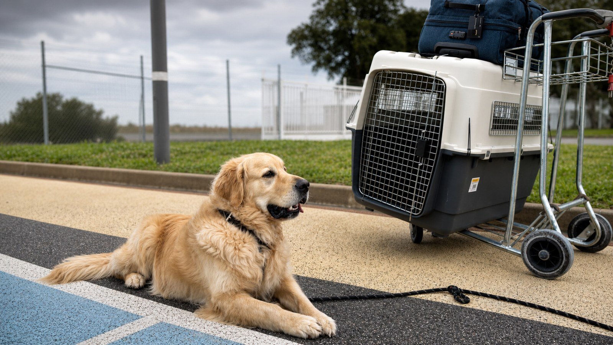
Le fondateur
Un chien, une passion du voyage, et une question sans réponse
Je m'appelle Philippe, j'ai 54 ans et je viens du monde de l'audiovisuel. Je suis aussi l'heureux propriétaire de Bailey, un Golden Retriever de quatre ans — et je n'ai jamais voyagé sans me demander comment l'emmener avec moi.
Chaque voyage commençait de la même façon : des heures à recouper les pages des compagnies, les exigences vétérinaires et des règles nationales qui se contredisaient. L'information existait, mais personne ne l'avait jamais réunie au même endroit.
L'intelligence artificielle m'a enfin donné les moyens de construire ce que je cherchais en tant que maître. MyDogCanFly en est le résultat : deux passions — les chiens et le voyage — devenues une plateforme qui répond en quelques minutes à la question qui me prenait des semaines.
« Je n'ai pas créé MyDogCanFly pour l'industrie. Je l'ai créé pour celui qui, à minuit devant son écran, se demande si son chien peut venir. »
Philippe
Fondateur, MyDogCanFly.com
mydogcanfly.com10
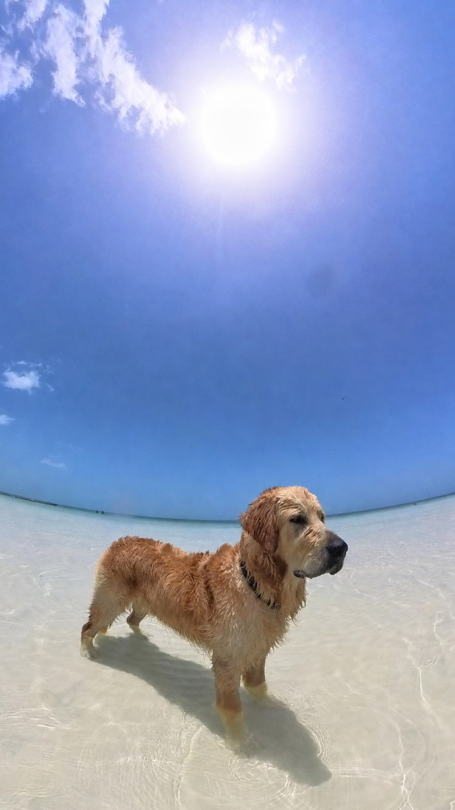
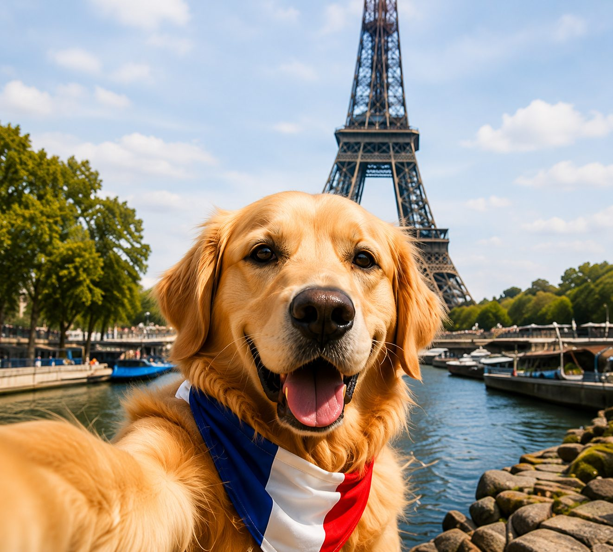
Paris, France
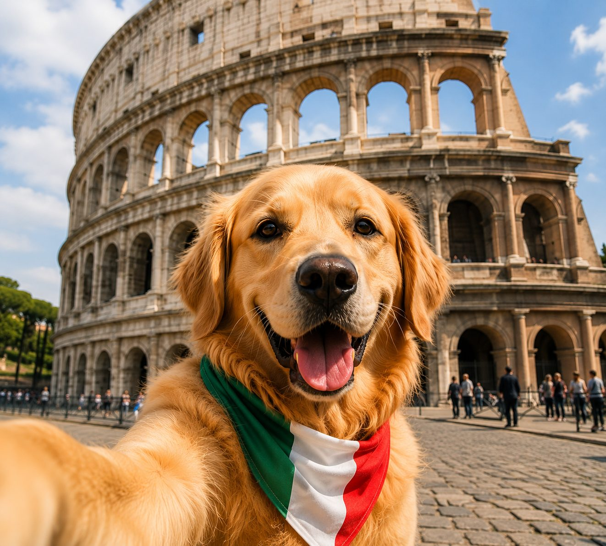
Rome, Italie
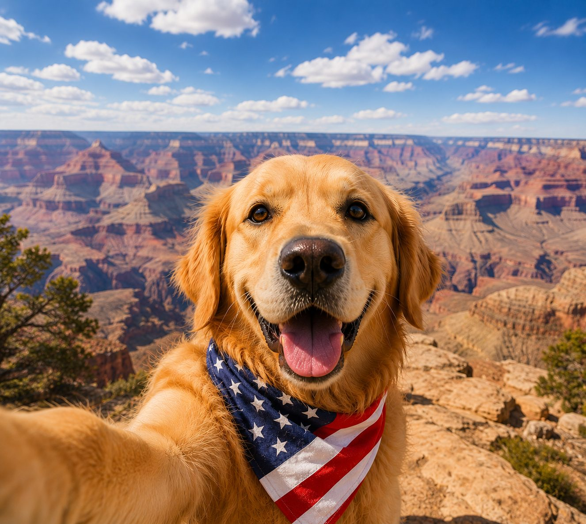
Grand Canyon, États-Unis
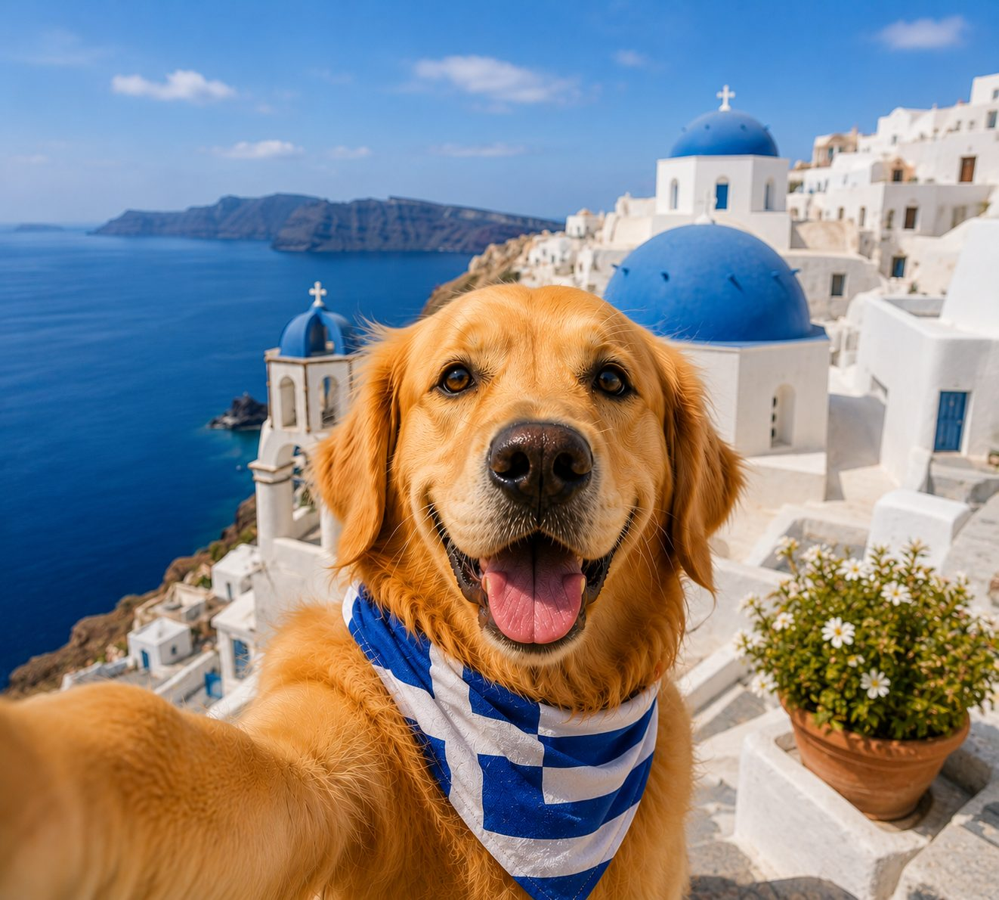
Santorin, Grèce
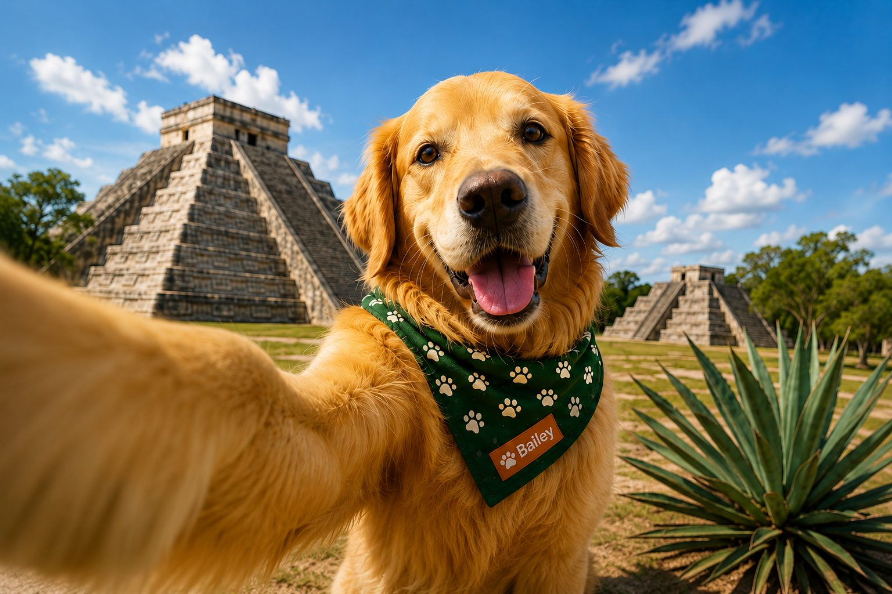
Chichén Itzá, Mexique
Notre mascotte
Notre bêta-testeur a 4 pattes
Je m'appelle Bailey, je suis un Golden Retriever de 4 ans. Je voyage depuis mes 3 mois !! Autant dire que l'avion fait partie de ma vie depuis toujours.
Vu mon gabarit, ma place est en soute, dans ma caisse. J'ai eu la chance d'y être habitué très jeune, et ça change tout : aujourd'hui j'y entre tranquillement, je m'installe, et j'essaye de dormir malgré le bruit :-)
J'ai déjà fait des trajets de plus de 18 heures de porte à porte, tout en restant propre (ça se travaille !)
Le plus loin ? Le Mexique, pour les plages de la photo, juste à côté. L'eau était à 32°, le sable brûlant, et je crois que je n'ai jamais eu aussi peu envie de rentrer !
Mais le meilleur moment du voyage, ce n'est ni le décollage ni la plage : c'est celui où je retrouve mon maître, à destination ou au retour à la maison !
L'important dans le voyage, c'est surtout de partir ensemble ! ♥
Bailey,
Directeur du Ouafketing
LE PRODUIT
À quoi ça ressemble
Quatre captures du site en ligne — pas des maquettes.
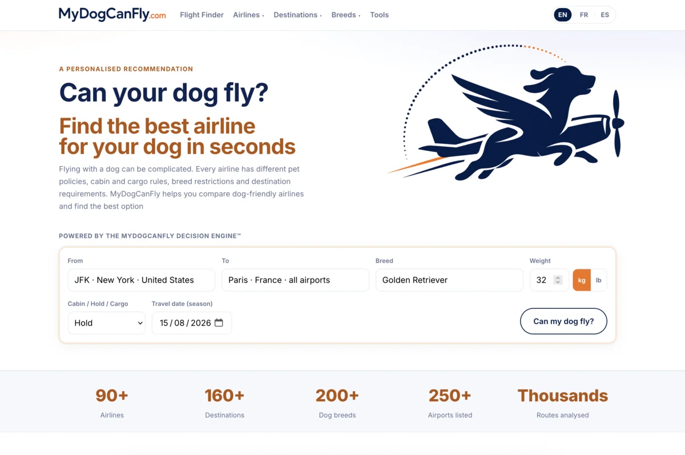
Le FinderTrajet, race, poids, cabine ou soute, date du voyage.
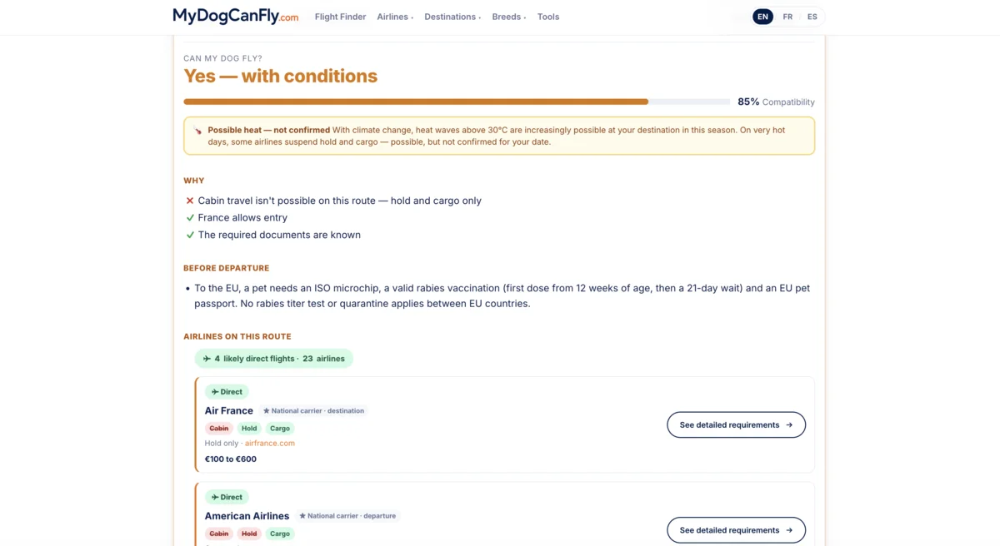
La recommandationUn verdict, un taux de compatibilité, et les compagnies qui font la route.
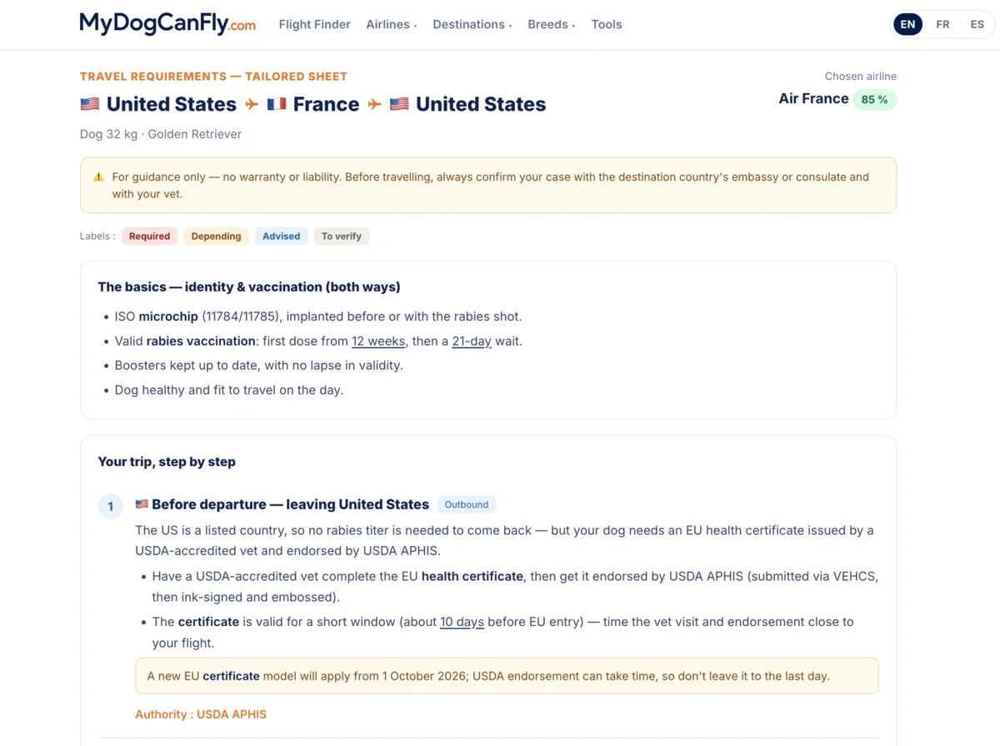
La fiche sur mesureÉtape par étape, aller et retour — chaque règle nomme son autorité.
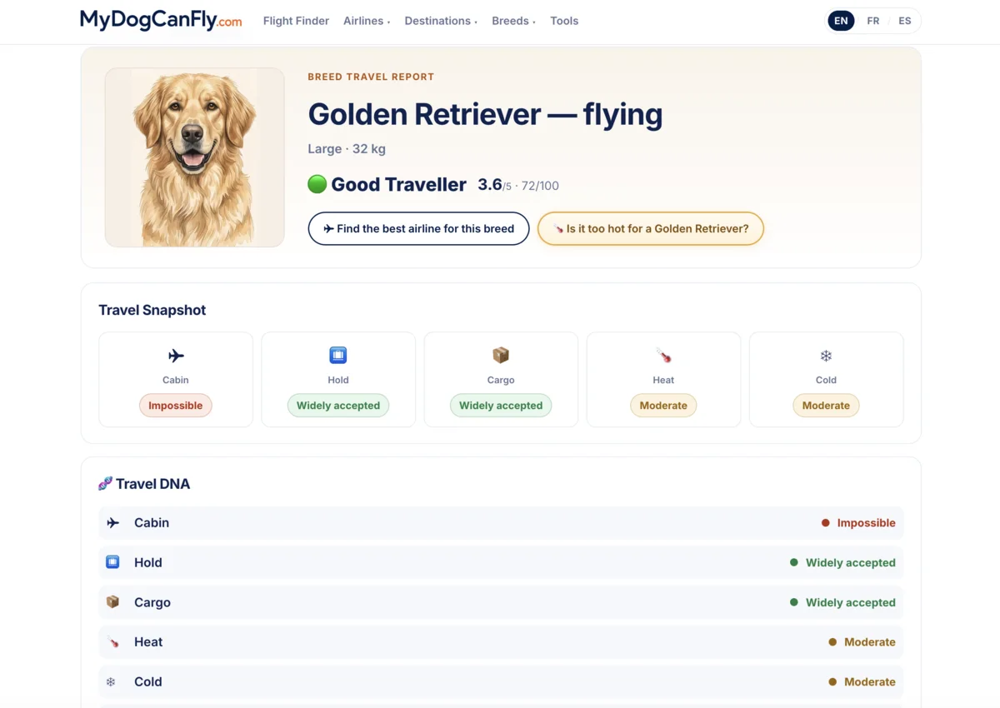
Le rapport de raceCabine, soute, cargo, chaleur et froid, lus sur les données de la race.
mydogcanfly.com12
Chichén Itzá, Mexique
Contact
Restons en contact
Journaliste, partenaire ou passionné de chiens avec une histoire à raconter : nous sommes toujours heureux de vous lire.